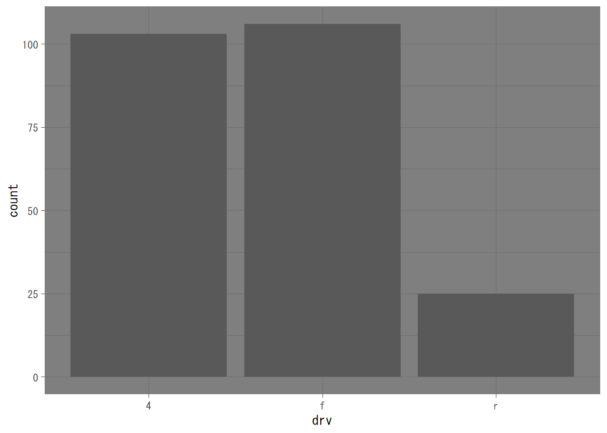

6.3 棒グラフ
ggplot2で棒グラフを作成するにはgeom_bar()関数を使います。棒グラフは、質的変数に対する頻度や比例尺度での集計値を示すグラフです。標準では、aesとして1つの質的変数のみを指定します。例えば、mpgデータでclassごとの度数を棒グラフにしたい場合は次のようにします。

散布図の場合は、xとyに指定された変数の値がそのままプロットされましたが、棒グラフの場合は、指定した質的変数（class）の度数を集計してからプロットするという流れになっています。これは、ggplot2のグラフ描画関数に連動する統計変換（Statistical Transformation）が実行される仕組みになっているためです。棒グラフの場合は度数の計算（count）ですが、ヒストグラムの場合は階級ごとの度数（bin）、箱ひげ図の場合は分位点（boxplotというように、標準での統計処理が定められています。これらは標準設定であり、データの与えられ方によっては変更すべき場合があります。例えば、以下のように、度数がすでに計算されており、個人ごとのデータがないような場合には、統計変換をしない（identity）設定にして、aesのxとyにそれぞれ、質的変数と度数を与えることによって棒グラフを描画することができます1。
## dept students
## 1 国際教養学科 605
## 2 環境科学科 283
## 3 食・健康学科 148geom_bar()でstat = "identity"とする代わりに、geom_col()を用いて、
とすることもできます。例えば、構成比率を棒グラフにしたい場合は、以下のようにするとよいでしょう。
mpg %>%
group_by(class) %>%
summarise(n = n()) %>%
mutate(prop = n / sum(n)) %>%
ggplot() +
geom_col(aes(class, prop))## `summarise()` ungrouping output (override with `.groups` argument)6.3.1 帯グラフと集合縦棒グラフ
geom_bar()関数では、position引数を使うことによって、集合縦棒グラフ（position = "dodge"）や帯グラフ（position = fill）を描画することができます。この場合、aesのfillに塗り分けたい（層別したい）質的変数を指定します。例えば集合縦棒グラフの場合は以下のようにします。
また、帯グラフの場合は以下のようになります。

geom_bar()関数におけるposition引数のデフォルト設定はstackであり、positionを指定せずにaesのfillを指定すると以下のように、積み上げ縦棒グラフが描画されます。
散布図を描画する
geom_point()の標準の統計変換はidentityとなっています。↩︎